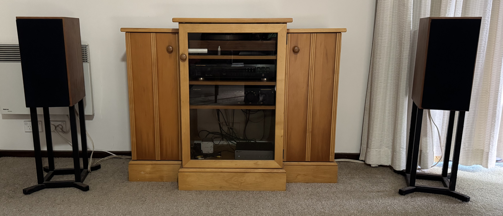

Chassis Fit

Dimensions and characteristics of Cabinet
- Internal width: 505 mm
- Internal height: 430mm (to underside of shelf above holding CD)
- Cabinet depth: 450mm
- Distance from cabinet rear to wall: 65mm (current position)
- The front of the cabinet has a glass swing door that blocks airflow from the front.
- The rear of the cabinet has been cut out, so it is open for ventilation.
- The top turntable shelf thas a rear hole of 50mm and a 4mm gap around the lid perimeter
I'm seeking to get the best out of the speakers, so prefer to go dual mono if I can, to get the better channel separation.
3U chassis (2 x separate monoblocs)
With 430mm height in the cabinet, 2 x 3U monoblocs leaves 170mm height for ventilation. That might be distributed as 30mm under the base monobloc, 50mm between them, and 90mm above the top one. There is 27mm air gap to the sides. It sounds marginal for good ventilation.
The optimal and usual way to use monoblocs is to put them next to the speakers, but for domestic harmony they need to go in the cabinet. So I have risks and higher costs, without benefit. So I've not headed down this path.
4U chassis (partial dual mono, shared transformer)
A 4U chassis fits in the cabinet with 259mm vertical gap for feet and overhead ventilation, and 27mm to the sides. That's plenty of gap, a viable arrangement thermally. This arrangement uses a shared transformer of large diameter with multiple independent secondaries (4 x 36VAC). Whilst it fits, it doesn't give as good separation from the output stages as 2 stacked transformers. After some consideration, I'm no longer doing this one.
5U chassis (full Dual Mono - 2 transformers)
A 5U chassis leaves 214mm vertical gap, and 27mm to the sides; ample for ventilation.
This would use 2 stacked transformers, which uses less floor area, allowing good separation from the output stages.
It is a big case, but I can fit it, so it seems the best option.
Layout
- Top fixed (turntable) shelf of cabinet: MNX10 Streamer and Preamp (side by side).
- Second shelf: CD player
- On base of Cabinet: 5U dual mono Wolverine power amp
Wolverine Chassis Details (assuming partial dual mono, shared transformer )
- Modushop Dissipante 5U, 500mm depth Black. Deluxe diyAudio version.
- Front 10mm aluminium, aluminium covers.
- Width 450mm, height = 216mm (without feet)
- The standard "Deluxe diyAudio" rear plate would suit me very well.
Preamp Chassis
I will use a Modushop Galaxy 2U half width chassis for the Preamp (height = 80mm) This fits the Mezmerize PCB intended for this chassis (200.5 × 68.6 mm) with enough extra depth to facilite a neat build
- Modushop Galaxy 2U, 230mm wide x 280mm depth Black
- Front 10mm aluminium, aluminium covers, height = 80mm (without feet)
- The preamp and streamer will fit side by side with 60mm gap. (Cabinet 450mm, MXN10 215 mm wide)